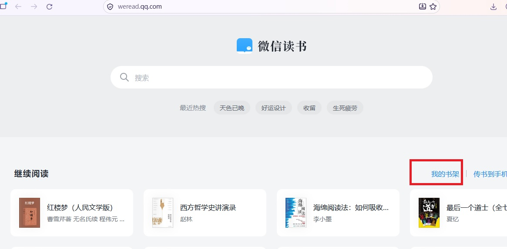
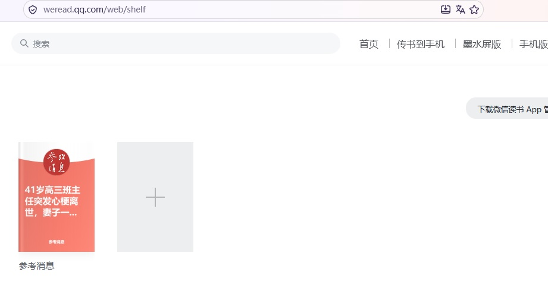
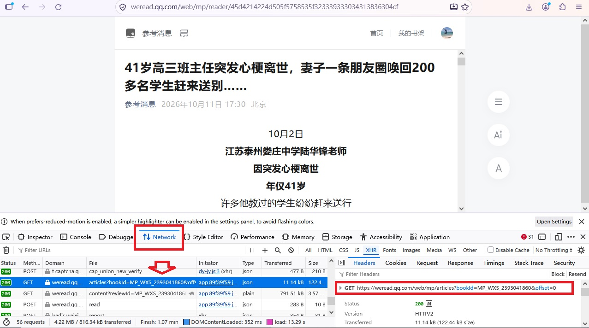
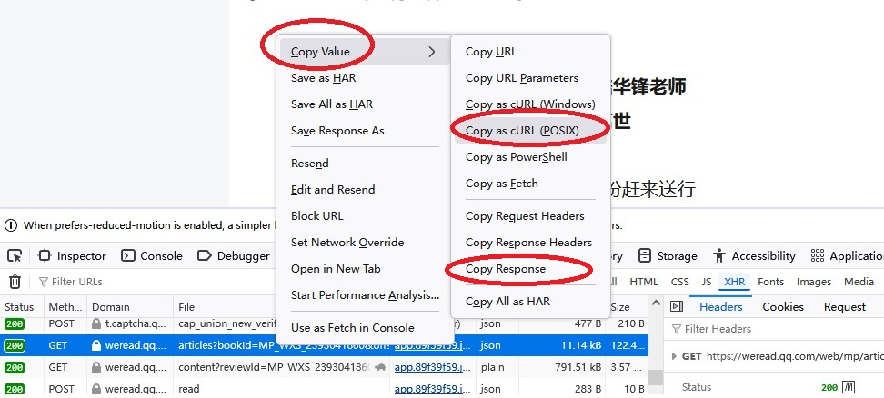
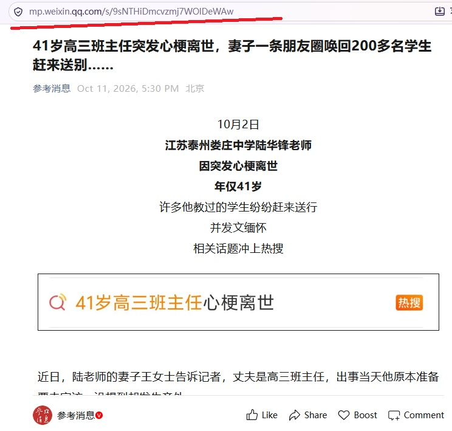

2026年7月底，微信关掉了公众号平台后台的跨账号查询接口，我的第一个开源项目wechatarticles失效。
网上搜了一下，发现原来同类的开源项目有好几个，包括一个12k+ star的项目也都直接归档了。幸运的是，也让我找到了另一个介绍如何解决的开源项目weread-mp-fetcher。
背景
上一篇文章批量下载微信公众号文章介绍了之前网上主流的微信爬虫的原理，并造就了我的第一个开源项目wechatarticles。2026年7月底，微信关掉了公众号平台后台的跨账号查询接口，上一篇文章介绍的方法和对应的wechatarticles项目失效。
根据weread-mp-fetcher这个开源项目的介绍，我又验证了一下通过微信读书抓取公众号文章列表的方法，准备再重启wechatarticles项目。
微信读书
之前的方法是通过分析微信公众号平台的网页入口，获取到微信的“通过公众号ID查询公众号最新文章列表”的HTTP接口（公众号平台后台的跨账号查询接口）。
微信读书的解决方案类似，也是通过微信读书的网页入口，获取到另一个类似的“通过公众号ID查询公众号最新文章列表”的HTTP接口。
weread-mp-fetcher有介绍的我就不再重复了，下面说下我的方案。
步骤
【微信读书】手机APP新增微信公众号
由于微信读书网页版不支持添加公众号，因此第一步需要先在手机的【微信读书】APP上添加公众号。
在APP【书架】页面，在搜索栏输入公众号名字。
在搜索结果中，点击【公众号】过滤条件，选到对应的公众号。
点击【加入书架】。
【微信读书】网页获取HTTP接口
与此前公众号平台的分析方法一样，通过网页分析获得后台接口。
打开微信读书，进入【我的书架】：

按【F12】打开调试窗口，点击之前通过手机APP新增的微信公众号：

在调试窗口的【Network】页面，找到对应的HTTP后台调用请求：https://weread.qq.com/web/mp/articles?bookId=MP_WXS_2393041860&offset=0。

获取到对应的请求和响应：

1 | curl 'https://weread.qq.com/web/mp/articles?bookId=MP_WXS_2393041860&offset=0' \ |
1 | {"reviews":[{"createTime":1791711109,"subCount":3,"subReviews":[{"reviewId":"MP_WXS_2393041860_9sNTHiDmcvzmj7WOlDeWAw","review":{"reviewId":"MP_WXS_2393041860_9sNTHiDmcvzmj7WOlDeWAw","userVid":10003,"type":16,"content":"","createTime":1791711109,"bookId":"","belongBookId":"MP_WXS_2393041860","mpInfo":{"originalId":"9sNTHiDmcvzmj7WOlDeWAw","synckey":0,"pic_url":"https://mmbiz.qpic.cn/mmbiz_jpg/GZJylvUWs2ICcPpDASoGDvWefiaV8MiaRnT3FztwibwfsNur0bIMLSox0ooMuNwc1gzXBwJKuGiboPIPpftibicjyvUad536lcV74PAHdaZwMic6j0/0?wx_fmt=jpeg","title":"41岁高三班主任突发心梗离世，妻子一条朋友圈唤回200多名学生赶来送别……","content":"","mp_name":"参考消息", |
注意响应中的如下内容：1
"review":{"reviewId":"MP_WXS_2393041860_9sNTHiDmcvzmj7WOlDeWAw",
【MP_WXS_2393041860】是【bookId】，可用于在后续爬虫工具中遍历所有需要关注的公众号，逐一调用接口【https://weread.qq.com/web/mp/articles?bookId=MP_WXS_2393041860&offset=0】获取文章列表。
【2393041860】用base64编码后即【MjM5MzA0MTg2MAo=】，其实就是公众号平台接口里面的【fakeid】字段。
【9sNTHiDmcvzmj7WOlDeWAw】就是对应的公众号文章url的最后一段。
比如，要查看公众号的这篇文章，打开链接【https://mp.weixin.qq.com/s/9sNTHiDmcvzmj7WOlDeWAw】即可。

通过上面的方法，就找到了替代微信关掉的“公众号平台后台的跨账号查询接口”的新的接口了。
补充
验证过程中，发现微信读书可能还增加了防爬虫的处理，要手工识别图片。暂时的解决思路是：
1、目前虽然叫爬虫，但是wechatarticles其实更像是RPA机器人，只是代替了人手点击提高查询效率而已，因此继续通过人手的方式解决防爬虫的问题即可，就像扫码登录一样，是可以保留一部分手工操作的。
2、可以参考weread-mp-fetcher这个开源项目的解决方案。